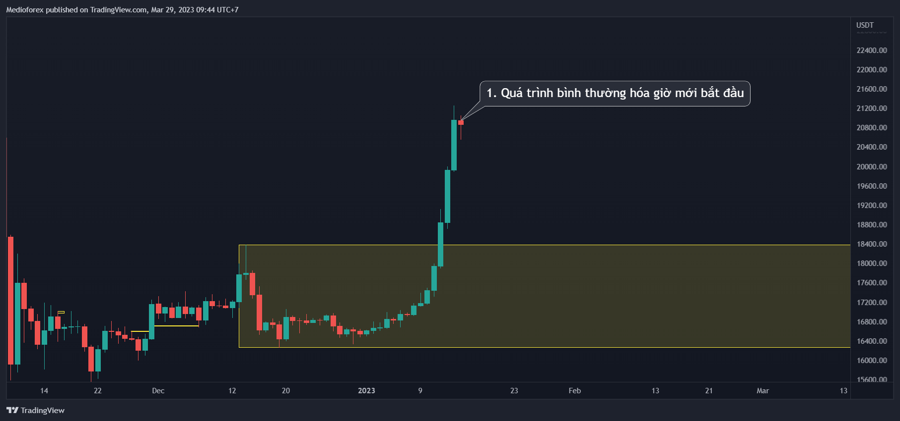
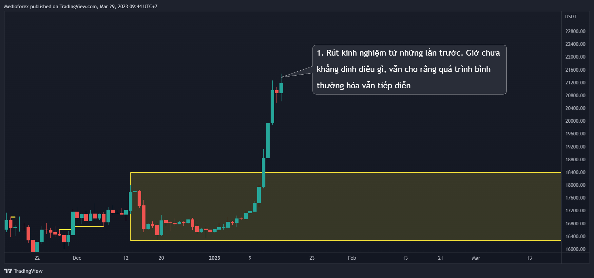

Chào các bạn, đây là bài đầu tiên sau tết Quý Mão (2023) của mình - Bài đầu tiên sau tết âm.
Vì không phải người giỏi đa nhiệm nên giờ mình mới có thời gian tập trung để viết được 1 bài hoàn chỉnh.
Và bài đầu tiên của năm này sẽ là 1 bài quan trọng. Nó chỉ là 1 mảnh ghép bé xíu thôi nhưng lại không thể thiếu trong chuỗi bài này của mình.
Vậy nội dung của bài này là gì?
Trước khi đi vào nội dung chính thì cần làm rõ lại là những bài gần nhất của series này như bài 5,6,7,8 thì hầu như đều tập trung, nói chủ yếu về cấu trúc thị trường. Và mình thấy gần như nó đã giải quyết được những câu hỏi lớn rồi.
Tuy nhiên mình không có nhiều bài về OB chưa sử dụng lắm, hình như chỉ có bài 2 và 3. Chính vì thế bài này mình chỉ tập trung nói về OB chưa sử dụng tại KLQT, đưa thêm hướng nhìn khác của mình vì biết đâu góc nhìn này sẽ gợi mở thêm cho bạn 1 cái gì khác hoặc cũng có thể có người hợp với kiểu nhìn này hơn thì sao.
Bài này nó cũng xuất hiện 1 vài quy tắc riêng của mình nữa nên giờ bắt đầu luôn nhé.
Bắt đầu nhé
Như chúng ta đã biết khi xuất hiện OB chưa sử dụng tại keylevel quan trọng thì đó là hiện tượng có lực mua hoặc lực bán mạnh mạnh bất thường trên thị trường. Vì đó là lực mua bán mạnh nên nếu dự đoán giá còn tiếp tục xu hướng của nó thì hoàn toàn có thể tự tin đặt luôn lệnh chờ tại OB chưa sử dụng ở keylevel quan trọng.
Lệnh chờ trong 1 xu hướng giảm
Lệnh chờ tại sóng giảm
Cái này chúng ta đã quen thuộc rồi. Có điều giờ thì cùng mình tiếp tục đầu sâu hơn 1 chút ở đây để thấy không phải mọi khối OB chưa sử dụng ở keylevel quan trọng đều tốt để đặt lệnh limit như vậy. Có trường hợp OB chưa sử dụng đó đã “bớt tốt” vì thế không phải lúc nào cũng đặt lệnh limit luôn như vậy.
Trước hết chúng ta cùng xem quá trình 1 khối OB chưa sử dụng được hình thành

Và nếu như bình thường thì giá sẽ chạy như này
Tại sao mình nói là phần lớn?
Đó là bởi vì phần lớn thời gian thị trường di chuyển như vậy. Ở trường hợp này thì nó chạy như này
Hiện giờ thị trường vẫn chạy bình thường. Nó đang cố quay lại ngay để retest trước khi đi xuống. Và để mọi thứ tiếp tục tục bình thường thì cây nến tiếp theo thường có khuynh hướng có thân hoặc râu nến quay lại để sử dụng khối OB rồi mới xuống. Tiếp tục
\=> Có thể nói 1 khối OB chưa sử dụng được hình thành là khi thị trường xuất hiện lực mua bán mạnh bất thường nhưng sau đó phe đối nghịch không đủ mạnh để đẩy giá làm “bình thường hóa” sự bất thường trước đấy.
Hi vọng đoạn diễn đạt ý của mình vừa rồi dễ hiểu và từ bây giờ chúng ta hãy đi vào nội dung chính của bài này qua vài trường hợp cụ thể sau.
I. Trường hợp 1
Chúng ta quay trở lại đồ thị bitcoin thời điểm bắt đầu uptrend năm 2018 đầu năm 2019
Kiểm tra thì thấy ở nơi bắt đầu xu hướng hay là keylevel quan trọng của xu hướng lớn có OB chưa sử dụng
Mà khi mà ở keylevel quan trọng khung lớn có OB chưa sử dụng thì khả năng rất cao là giá chạy theo khung lớn - về keylevel quan trọng khung lớn cho dù keylevel quan trọng khung nhỏ có OB chưa sử dụng hay không ( Xem lại bài 5 13).
Nhưng những năm đó mình chưa được như bây giờ nên đã mua tại keylevel quan trọng khung nhỏ, giá bật lên tưởng thơm kèo rồi và không mua thêm được ở keylevel quan trọng khung lớn.
Đó là một chút kinh nghiệm rút ra được từ quá khứ, giờ tập trung quay trở lại vấn đề chính là về khối OB chưa sử dụng nhé.
Hãy nhìn cách khối OB chưa sử dụng ở keylevel quan trọng lớn được hình thành
OB chưa sử dụng hình thành kiểu này thì với mình nó đẹp tựa Tây Thi vậy. Những OB kiểu này thì rất uy tín để đặt lệnh limit.
Trường hợp 2.1
Lại bắt đầu nhìn sự hình thành của khối OB chưa sử dụng nhé
Đầu tiên vẫn là sự bất thường tạm thời
Tiếp đó
Quá trình bình thường hóa vẫn đang diễn ra
Tiếp theo vẫn vậy
Tiếp tục

Giá tăng tiếp như trên thì ở thời điểm này phần lớn dự đoán quá trình bình thường hóa đó đã thất bại và khối OB chưa sử dụng đã được tạo thành. Nó giống như trường hợp 1 và khối OB chưa sử dụng ở dưới vẫn là khối OB đẹp tựa Tây Thi.
Nhưng sau đó

Việc xuất hiện cây nến đỏ dài tiếp theo như này thì với mình đó là cú phá vỡ giả (fail break). Thực chất quá trình bình thường hóa vẫn đang tiếp diễn chứ chưa kết thúc và nó bình thường hóa thêm 1 chút nữa rồi.
Sau đó
Nhưng nó vẫn không bình thường hóa hết mà tăng tiếp thì khối OB chưa chưa sử dụng ở dưới với mình vẫn là khối OB có thể vào lệnh limit luôn được. Nhưng phải nói là nó sẽ không đẹp như ở trường hợp bên trên nên chắc chắn không tốt và an toàn bằng.
Trường hợp 2.2
Đây là trường hợp tương tự trường hợp 2.1 trên. Mình lấy thêm 1 ví dụ nữa để dễ hiểu hơn.
Bạn lại chịu khó quan sát tiếp nhé
Tiếp theo
Tiếp tục
Sau cây nến này thì phần lớn dự đoán quá trình bình thường hóa kết thúc rồi và khối OB chưa sử dụng đã tạo thành
Nhưng sau đó
Vẫn là 1 cú phá giả. Quá trình bình thường hóa vẫn còn tiếp tục và nó sắp bình thường hóa hết rồi.
Trường hợp 3
Giờ hãy quay về biểu đồ bitcoin đợt uptrend từ đầu năm nay đến giờ và lại chịu khó quan sát quá trình hình thành cùng mình nhé



Từ việc hiểu, quan sát quá trình nó hình thành thì khối OB chưa sử dụng bên dưới vẫn là khối OB chưa sử dụng tiềm năng.
Bạn có thể dựa vào cách nhìn quá trình khối OB đó hình thành hoặc nhìn trên phương diện cấu trúc thị trường thì nó đều ra 1 kết quả.
Kết quả vẫn là nên vào lệnh ở khối OB chưa sử dụng bên dưới - Khối OB ở keylevel quan trọng khung lớn.
Nó không về được điểm đặt lệnh mà tăng lên thì đó không phải là điều gì khó hiểu. Nếu chưa hiểu thì bạn có thể xem lại bài số 3 này 66
Và giờ mới là trọng tâm của trường hợp 3 này:
Khi quá trình “bình thường hóa” kết thúc mà giá quay về khối OB chưa sử dụng (có thể chỉ về khoảng trống imb trên khối OB) rồi tăng tiếp lên thì khối OB chưa sử dụng đó nó không còn đẹp như Tây Thi nữa rồi. Và vì khối OB chưa sử dụng nó đã bớt tốt nhiều rồi không nên đặt lệnh limit nếu giá quay trở lại nữa.
Nếu giá quay lại khối OB đó 1 lần nữa thì không nên đặt lệnh limit nữa. Nếu muốn mua thì nên đợi xác nhận mới mua.
Trước đây mình vẫn hay đặt limit luôn nếu giá xuống ở những trường hợp như vậy nhưng sau đó đúc kết lại thì đợi xác nhận ở những trường hợp xấu vẫn là chân ái.
Thêm 1 trường hợp suýt soát khó nhìn nâng cao chút nữa nhé
Kết luận
Hi vọng bài này có thể gợi mở cho bạn 1 cái gì đó khác mà trước kia chưa có.
Mình viết xong xem lại thì hơi giật mình vì nó hơi nhiều ảnh và dài hơn so với mình nghĩ nên sợ nhiều chỗ lan man. Chỗ nào lan man thì bạn bỏ qua nhé vì ý chính của cả bài này có đúng 1 nhúm à.